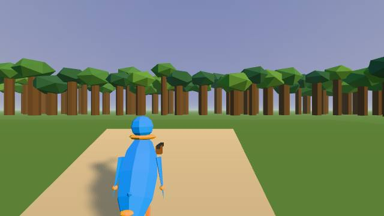
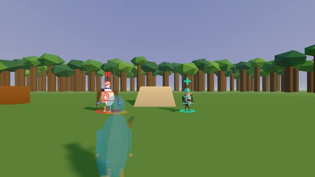
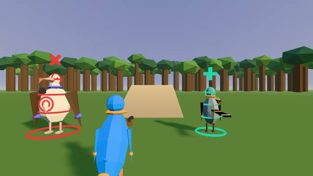
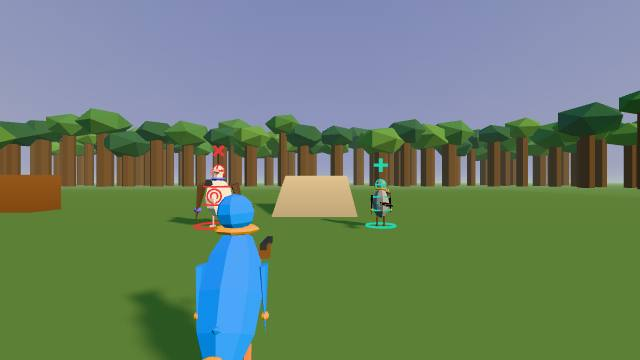

Kingfisher Playable
Assassin · Playable since Stage 2
Appearance: small, forward-leaning, with a dagger bill as long as its head is wide; stubby tail; crouched sprinter stance. Electric-blue back with a white throat and orange chest. Reads as "small, low, giant straight bill".
How to play
Assassins pick off one target at a time. Wait in cover, strike a bird that has strayed from its flock, and leave before the answer arrives. Mobility is your health bar.
Kingfisher fights with the Dart Pistol, which hits instantly. Damage drops off between 18 m and 40 m, and head hits are beak shots worth ×1.65. Every level above 1 is a Molt: +30 max HP per level; +3% gun damage of base per level; +1 Song power per level; +3 melee damage per level.
Use Glint to start fights unseen, then spend your gun on whoever the ambush bonus hit. Riverstrike is a finisher, not an escape.
Abilities
Four abilities. Slots 1 to 3 unlock at level 1, the ultimate at level 6. Each can be upgraded three times, for 1, 2, 5 AP, in order; see Ability Points. The shortest cooldown in the kit is Spear Bill at 10 s.

1. Plunge
Dash 14 m in 0.3 s along your aim. It stops on the first enemy hero: 80 + 0.8 x SP Song damage, then +25% fire rate for 3 s. Two charges.
- Tier 1 · 1 AP+30 damage damage +30
- Tier 2 · 2 AP-3 s cooldown cooldown -3 s
- Tier 3 · 5 APA hero hit is slowed 40% for 2 s and you get a charge back slow s +2, refund +12

2. Glint
Invisible for 5 s with +25% move speed. Leaving invisibility (attacking, casting or timing out) starts Ambush: +40% damage on all hits for 1.5 s.
- Tier 1 · 1 AP+3 s duration duration +3
- Tier 2 · 2 AP-6 s cooldown cooldown -6 s
- Tier 3 · 5 APAmbush's first hit on a hero also silences it for 2 s

3. Spear Bill
Lunge 5 m and stab: 110 + 1.0 x SP Song damage (+50% below 40% HP) and a bleed of 15 + 0.15 x SP Song damage a second for 4 s.
- Tier 1 · 1 APBleed lasts 6 s bleed +2
- Tier 2 · 2 APThe bonus applies below 50% HP radius40 -1, radius50 +1
- Tier 3 · 5 APKilling a hero resets Spear Bill and Plunge

4. Riverstrike
Target an enemy hero within 30 m: after a 0.5 s cast (a stun cancels it) you appear 1.5 m behind them and strike for 220 + 1.6 x SP Song damage plus 12% of their missing HP. If they die within 3 s, half the cooldown comes back.
- Tier 1 · 1 AP+10 m range (40 m) range +10 m
- Tier 2 · 2 APMissing-HP part rises to 18%
- Tier 3 · 5 APThe target is silenced 1.5 s and you turn invisible 1.5 s after the strike
Since Stage 2. See all heroes.